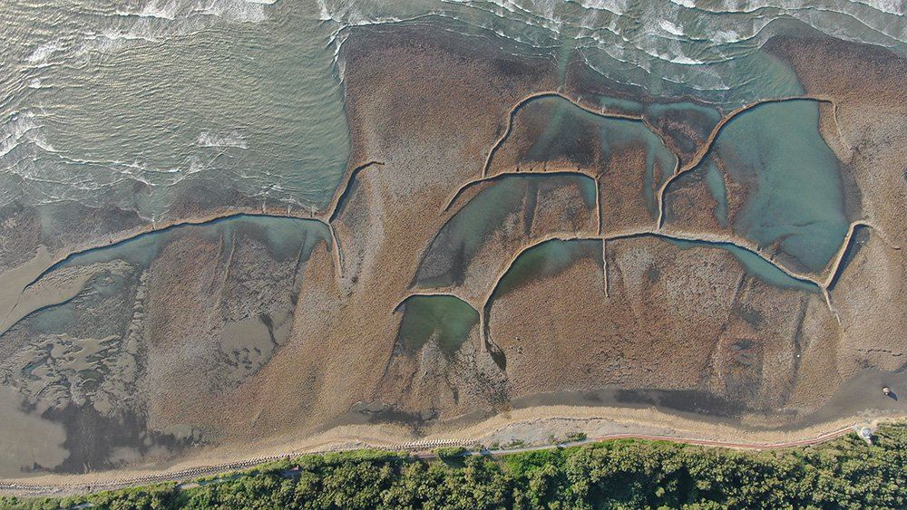
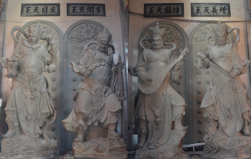

核心敘事
一海・一田・一信仰
海，對應生存；田，對應生產；信仰，對應精神。
這三者不是三個主題而已，是共同構成新屋地方生活的三條脈絡。
◯ 海
對應生存。順應潮汐運作的海岸生存智慧。
□ 田
對應生產。土地、穩定與農業節奏的具象化。
✢ 信仰
對應精神。從廟宇空間延伸至日常移動的記憶載體。
提取新屋石滬的有機曲線—，轉化為陶瓷器皿的紋理語言。新屋百年石滬群是以石塊堆築、順應潮汐運作的海岸文化景觀，這樣的構造本身就帶有一種與自然共存的邏輯。



這次內容物特別選用桃園在地育成的「桃園 3 號」米。這款米帶有獨特的天然芋頭香氣，是最適應新屋沿海風土與氣候的代表性品種。
透過包裝設計，希望能將這款香米的稻作時間壓縮成可閱讀的圖像。
以「甘泉寺石觀音」作為主標，將地方信仰轉譯為四格連續紋樣。四格分別對應：風、調、雨、順，象徵新屋從海岸、農田到信仰的生活循環。


圓盤對應海，方形包裝對應田，上方吊牌對應信仰。海的循環、田的秩序、信仰的連結，透過上下層次被組織成一個整體。。